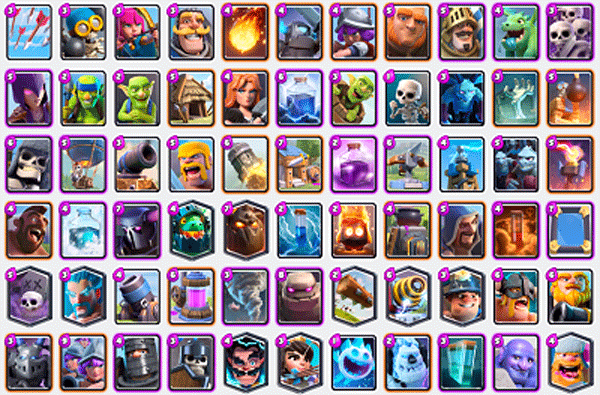

Trucos para crear el mejor mazo de Clash Royale
Paso 1: elegir qué tipo de mazo quieres jugar
En primer lugar debes ser consciente de qué cartas tienes y qué tipo de mazo quieres jugar. Si buscas un mazo muy rápido con muchos bichos, necesitarás tener cartas potentes de coste reducido. Si por el contrario quieres mantener el control en todo momento, pues debes apostar por cartas más defensivas o magias.
Paso 2: elegir una condición ganadora
¿Con qué carta quieres darle el golpe de gracia a la torre enemiga? ¿Quieres que sea el globo el que se cuele hasta la cocina para bombardear al rival? ¿Quieres ver cómo el Pekka avanza sin pausa hasta destruir la torre de tres espadazos? Elige tu carta favorita y crea el mazo en torno a ella.
Paso 3: elige una segunda condición ganadora
Las cartas no siempre llegan como te gustaría, así que tener una segunda condición ganadora es clave para poder darle la vuelta a la partida ante cualquier situación. Eso sí, ten en cuenta que si la primera condición ganadora es de coste alto, esta debería ser más baja y viceversa.
Paso 4: elige defensores y apoyo
Intenta imaginar cómo será la partida y adelantarte a qué unidades podría lanzar el rival. Si vas con un Gólem lo peor que podría pasarte es que lance un ejército de esqueletos, o una Horda de esbirros en el caso del Globo. ¿Qué cartas van a ayudarte a evitar esas situaciones? Esas son las que debes elegir tanto para defenderte tú como para apoyar tu avance.
Paso 5: prueba y modifica el mazo
Hasta encontrar el mazo con el que me sentía completamente cómodo estuve muchísimo tiempo trasteando, viendo cómo los enemigos me contrarrestaban y en qué momentos mis unidades funcionaban mejor. A partir de aquí todo se reduce a testear y modificar en base a tus victorias y derrotas. Y recuerda, perder es mucho más útil que ganar para conseguir el mazo perfecto. Os dejo una copia de mi mazo por si os resulta útil para entender el proceso. ¡Buena suerte!